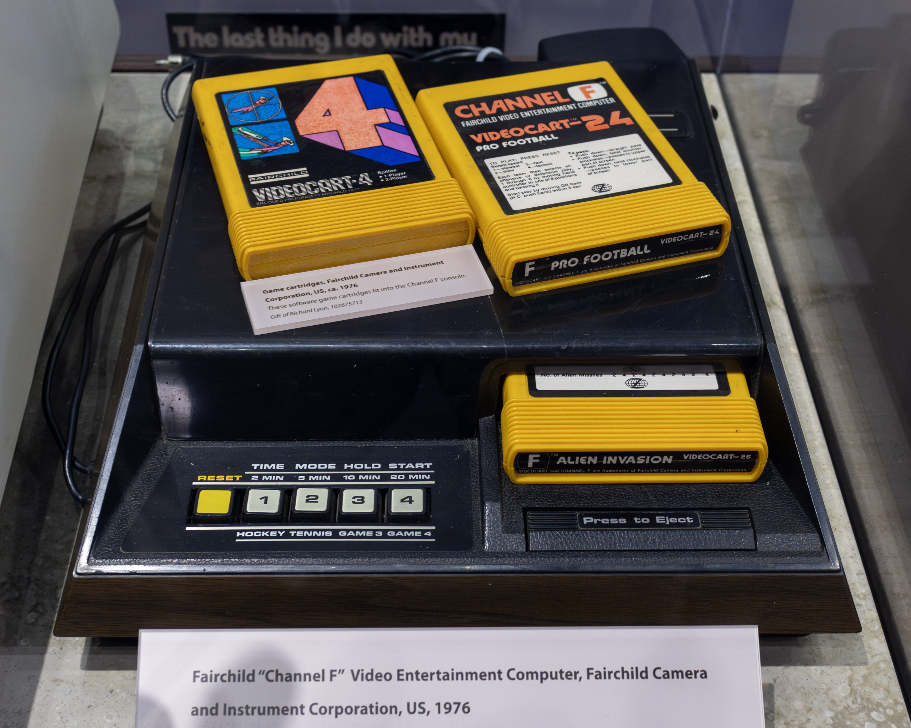
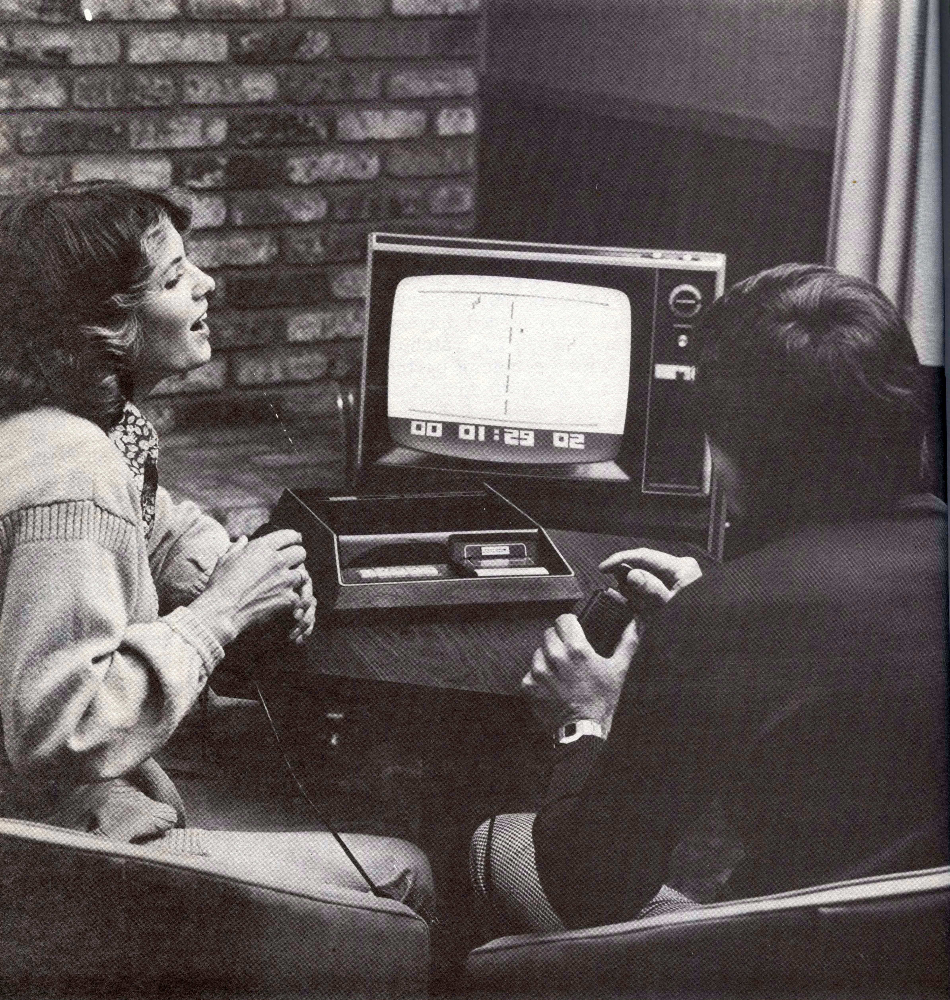

Fairchild Channel F
The first cartridge console, steered and fired by one knob you push, twist, and pull

Overview
The Fairchild Channel F (short for "Channel Fun") is the first home video game console to be built around a microprocessor and the first to use ROM cartridges — "Videocarts" — instead of games baked into the hardware. Released in November 1976 at $169.95, it ran on a Fairchild F8 8-bit CPU with 64 bytes of scratchpad RAM and a 2 KB video buffer (about 104×60 visible pixels). Fairchild sold roughly 350,000 units by 1979, when the line was sold to Zircon, which continued it as the Channel F System II until 1983.
The hardware was led by Jerry Lawson, a self-taught engineer who joined Fairchild Semiconductor in 1970 and became head of the video game division's engineering. Fairchild licensed the "Project RAVEN" prototype from Alpex Computer Corporation in January 1976, and Lawson's team brought it to market. The controller is the artifact's heart: a base-less pistol-style handgrip with a triangular cap on top that tilts in eight directions, twists left and right, and can be pushed down or pulled up — eight switch functions wired through a 9-pin plug, so the same grip is simultaneously a joystick, a digital paddle, and a two-state fire control. The Channel F was also the first console with a pause ("Hold") function and hardwired detachable controllers.
Deep dive
The Channel F controller's 9-pin pinout (documented in the Channel F FAQ by Dyer & Webb, 1997) lists eight distinct switch functions: twist left, twist right, pull up, push down, and four directional switches. Wikipedia (citing Rev. Rob Vinciguerra) describes the interaction: "the main body is a large handgrip with a triangular 'cap' on top, which can move in eight directions. It could be used as both a joystick and paddle (twist), and not only could it be pushed down to operate as a fire button, it could be pulled up as well." The twist is a contact-based digital paddle rather than an analog potentiometer, which is why Wikipedia's infobox calls the input "Joystick/digital paddle." In the built-in Hockey game the reflecting bar is re-angled by twisting the knob; in Videocart-9 Drag Race the same triangular knob that steers the car is twisted to shift gears. One knob, two jobs, zero dedicated buttons.
Lawson conceived the stick controller (rendered for production by Talesfore, with Ronald A. Smith named sole inventor on the cartridge patent, US 4,095,791 "Cartridge programmable video game apparatus", filed August 23, 1976). Lawson — one of the only Black engineers in Silicon Valley at the time and the only Black member of the Homebrew Computer Club — was the subject of a Google Doodle (2022), an IGDA honor (2011), and a World Video Game Hall of Fame exhibit at The Strong. The cartridge design itself was the interaction revolution: ROM cartridges the size of 8-track tapes, $19.95 each, sold as "Videocarts."
The Channel F introduced the pause function and detachable hardwired controllers, predating the Atari VCS by a year. But it lost the format war: the Atari 2600's larger library and Fairchild's own exit from consumer electronics capped sales around 350,000. Zircon's System II (1979) swapped in removable Atari-style DE-9 controllers — losing the twist-grip entirely. No later mass-market controller ever replicated the push-twist-pull grammar.
The museum's RCA Studio II (1977) has keypads built into the console and no joystick; Coleco Telstar Arcade (1977) makes the console body the controller. The Channel F is the first cartridge console and the only collection exhibit whose primary input is a single hybrid grip that combines directional, rotational, and two-state vertical control — a proto context-dependent input, nine years before the NES D-pad.
Team & pioneers
- Jerry Lawson. Chief hardware engineer / director of engineering for the Fairchild video game division; conceived the Channel F controller and the consumer cartridge; one of the first Black engineers in Silicon Valley.
- Wallace Kirschner & Lawrence Haskel. Alpex Computer Corporation employees who created the Project RAVEN prototype licensed by Fairchild.
- Nicholas Talesfore. Industrial designer of the console styling and controllers.
- Ronald A. Smith. Mechanical engineer; sole inventor of US Patent 4,095,791 for the cartridge-programmable console.
Media


Sources
- Wikipedia — Fairchild Channel F
- The Henry Ford — The F Stands for Fun: Jerry Lawson & the Fairchild Channel F
- Channel F FAQ (Dyer & Webb, 1997) — controller pinout and repair
- Rev. Rob Vinciguerra — The first modern game console (2007)
- US Patent 4,095,791 — Cartridge programmable video game apparatus
- NPR — Remembering Jerry Lawson (2021)
- Fast Company (Benj Edwards, 2015) — The untold story of the invention of the game cartridge